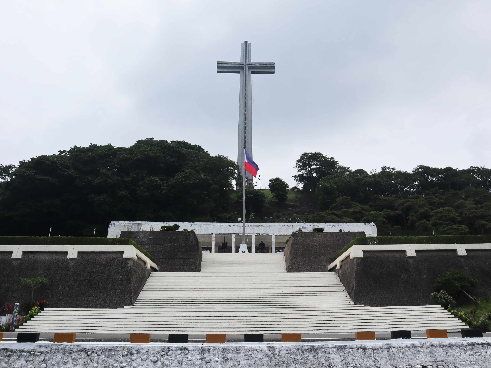
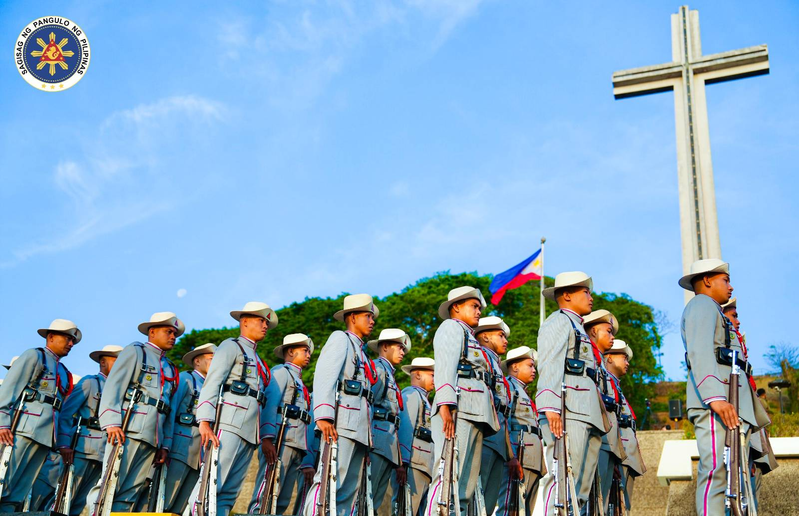

Introduction
The Day of Valor, known as "Araw ng Kagitingan" in the Philippines, honors the courage of the Filipino and American soldiers who bravely defended Bataan in 1942. This national holiday celebrates their sacrifices and the enduring spirit of valor.
Historical Significance
Observed every April 9, the Day of Valor commemorates the tragic Bataan Death March, where thousands of Filipino and American prisoners of war endured extreme hardships. The day stands as a reminder of the resilience and unity of Filipinos during one of the darkest times in the country’s history.
Modern Commemorations
Today, the Day of Valor is marked by ceremonies and events, especially at the Mount Samat Shrine in Bataan, where government officials, veterans, and citizens gather to honor the memories of the fallen heroes.
